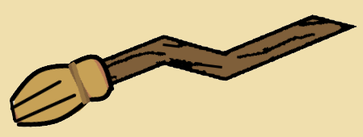

Hogwarts
Hogwarts
Welcome to Hogwarts school
of
Witchcraft and Wizardry!
Welcome
Dear Prospective Student or guardian, We are pleased to inform you that you or someone for whom you are responsible have been accepted at Hogwarts School of Witchcraft and Wizardry. Please find enclosed a list of all necessary books and equipment. Term begins on 1 September. We await your owl or, by very recent update, your "electronic" confirmation by no later than 31 July.
Heritage
When a young Witch or Wizard student enters the illustrious halls of Hogwarts, and school that has stood for well over a hundred years, they will be immersed in the shared Cultural Heritage of people like them: those who are gifted with Magic. This will be a once-in-a-lifetime opportunity to mingle with peers of a similar age, magical potential, and even temperament, to some degree, as they are sorted into their Houses.
Magic and Technology
There will, regrettably, be no modern "computers" or "WiFi", as these are merely a device that is used to connect students and their families to school resources, and, as a matter of fact do not work while on Hogwarts grounds.
Magic and technology have an inherent disconnect, and we cannot recommend that any student bring valuable items that run on "electricity" or other complex non-magic onto the grounds.
~M.McGonagall
Uniform
First-year students will require:
1. Three sets of plain work robes (black)
2. One plain pointed hat (black) for day wear
3. One pair of protective gloves (dragon hide or similar)
4. One winter cloak (black, with silver fastenings)
Please note that all pupil's clothes should carry name tags.
COURSE BOOKS
All students should have a copy of each of the following:
The Standard Book of Spells (Grade 1)
by Miranda Goshawk
A History of Magic
by Bathilda Bagshot
Magical Theory
by Adalbert Waffling
A Beginner's Guide to Transfiguration
by Emeric Switch
One Thousand Magical Herbs and Fungi
by Phyllida Spore
Magical Drafts and Potions
by Arsenius Jigger
Fantastic Beasts and Where to Find Them
by Newt Scamander
The Dark Forces: A Guide to Self-Protection
by Quentin Trimble
OTHER EQUIPMENT 1 wand 1 cauldron (pewter, standard size 2) 1 set glass or crystal phials 1 telescope 1 set brass scales Students may also bring, if they desire, an owl OR a cat OR a toad. PARENTS ARE REMINDED THAT FIRST YEARS ARE NOT ALLOWED THEIR OWN BROOMSTICK
